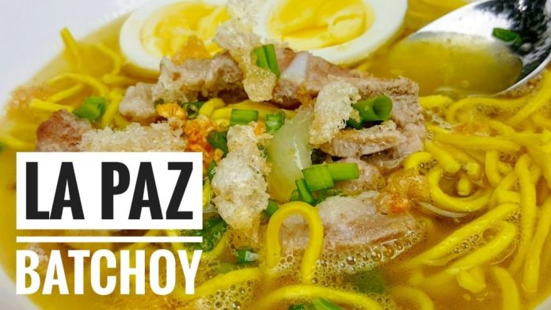
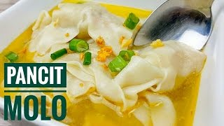

Best Foods
Food is undoubtedly Iloilo’s biggest year-round attraction. Most true-blooded locals will, without fail, offer to take you to eat at local restaurants or prepare a home-cooked Ilonggo meal if they find out that you’re a first-time visitor. Don’t miss out on savoring fresh seafood and Iloilo’s native cuisine, especially its signature dishes like La Paz Batchoy and Pancit Molo.
La Paz Batchoy is one of Iloilo’s best-known signature dishes and a must-try delicacy served in restaurants all over Iloilo City. This noodle soup is made with miki, (round noodles), pork organs (liver, spleen, kidneys and heart), chicken stock, beef loin, shrimp stock, and garnished with chicharon (pork cracklings).
Said to have originated from the town of Molo in the province of Iloilo and influenced by the wonton soups brought in by the large community of Chinese settlers in the area, pancit molo is a soup dish made of meat-filled dumplings, shredded chicken and a robust broth. The piping-hot soup is ladled into serving bowls, and garnished with green onions and fried garlic bits for another layer of flavor.
